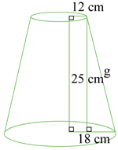
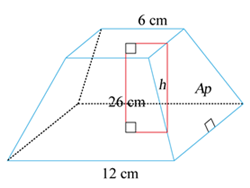

1.
Determina la generatriz de los conos truncados con los datos de cada imagen y encierra
la opción correcta.
2.
Observa los conos truncados con los datos de cada imagen y calcula la generatriz y el
área de la base superior e inferior.
3.
Calcula el área lateral de los conos truncados en base a los datos dados.
4.
Observa los datos del gráfico, calcula el área total y el volumen del cono truncado.

AT = cm2
V = cm3
5.
Relaciona los datos de las pirámides truncadas con su apotema lateral.
6.
Calcula el área lateral de las siguientes pirámides truncadas:
7.
Determina el área total y el volumen de la pirámide truncada con los datos que se muestra en
el gráfico.

AT = cm2
V = cm3
8.
Escribe V si es verdadero o F si es falso en
los enunciados según corresponda.

9.
Reúnete con un compañero, grafiquen y determinen el área total y el volumen de
una pirámide truncada de base pentagonal de 25 cm de altura, apotema y lado de la base inferior 13
cm y 15 cm respectivamente. Apotema y lado de la base superior 6 cm y 8 cm respectiva mente.
AT =
V =